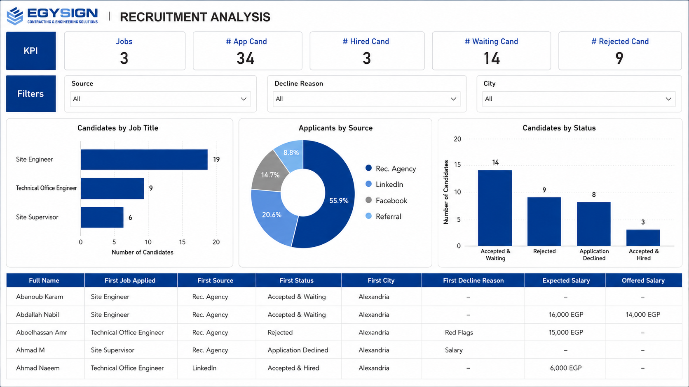

Created a recruitment analytics dashboard to track candidates, hiring stages, application statuses, waiting lists, and recruitment performance for clearer HR decision-making.

This case study documents a practical business system/project focused on improving reporting visibility, workflow structure, and data-driven decision-making.
Recruitment tracking needed better visibility across applicants, statuses, hiring stages, accepted candidates, waiting lists, and role-specific progress.
I designed the recruitment tracking structure and dashboard logic to help HR and management follow hiring activity more clearly.
I built a recruitment dashboard that converts candidate records into clear hiring pipeline views, status breakdowns, and recruitment performance indicators.
Improved recruitment visibility, made candidate follow-up easier, and supported faster hiring decisions.